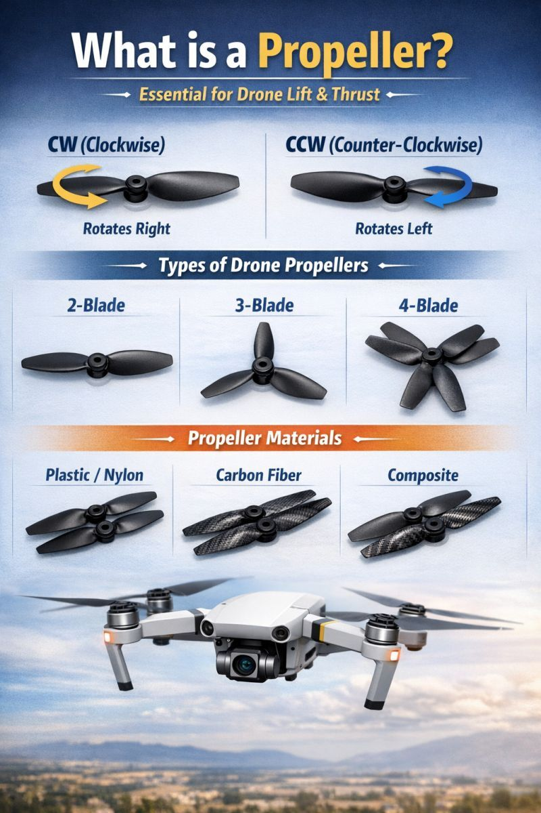

What is a Drone Propeller?
A propeller is an aerodynamic rotating wing that converts the motor’s
rotational energy into thrust. Propeller choice directly affects
lift, efficiency, noise, flight time, and motor stress.
A poorly selected propeller can:
- Overload motors and ESCs
- Reduce flight time
- Cause instability
- Increase vibration and noise
Basic Propeller Terminology
- Diameter: Tip-to-tip size (in inches)
- Pitch: Distance the propeller would move in one rotation
- Blade count: Number of blades (2, 3, 4, etc.)
- Rotation: CW (clockwise) or CCW (counter-clockwise)
Propeller Types by Blade Count
Two-Blade Propellers
- Highest efficiency
- Lower thrust per RPM
- Used in mapping, endurance, and long-flight drones
Three-Blade Propellers
- Higher thrust in compact size
- Smoother response
- Used in racing and FPV drones
Four or More Blades
- High thrust in limited space
- Lower efficiency
- Higher current draw
- Used in specialty or ducted drones
Propeller Types by Size
Small Propellers (3–6 inch)
- High RPM
- Used in micro and racing drones
- Low inertia, fast response
Medium Propellers (7–10 inch)
- Balanced performance
- Common in hobby and camera drones
Large Propellers (11–18+ inch)
- High thrust at low RPM
- Used in mapping and heavy-lift drones
- Better efficiency
Low Pitch vs High Pitch
Low Pitch Propellers
- Higher efficiency
- Lower top speed
- Used for endurance and hovering
High Pitch Propellers
- Higher speed
- Higher current draw
- Used in racing and fast drones
Propeller Materials
Plastic (ABS / Nylon)
- Cheap and flexible
- Safer for beginners
- Lower efficiency
Carbon Fiber Reinforced Plastic
- Lightweight
- Stiffer than plastic
- Common in FPV drones
Full Carbon Fiber
- Very stiff and precise
- High efficiency
- More dangerous on impact
- Used in professional drones
Wooden Propellers
- Used in experimental or fixed-wing UAVs
- Good vibration damping
How to Choose the Right Propeller
- Match propeller size to motor KV
- Ensure frame provides enough clearance
- Check motor thrust charts
- Balance efficiency vs thrust
Rule of Thumb:
Larger props + lower KV motors = efficiency
Smaller props + higher KV motors = speed
Common Mistakes
- Using large props on high-KV motors
- Ignoring CW / CCW pairing
- Using unbalanced propellers
- Choosing props without checking current draw
Safety Considerations
- Never test props indoors without restraints
- Remove propellers during configuration
- Carbon props can cause severe injuries